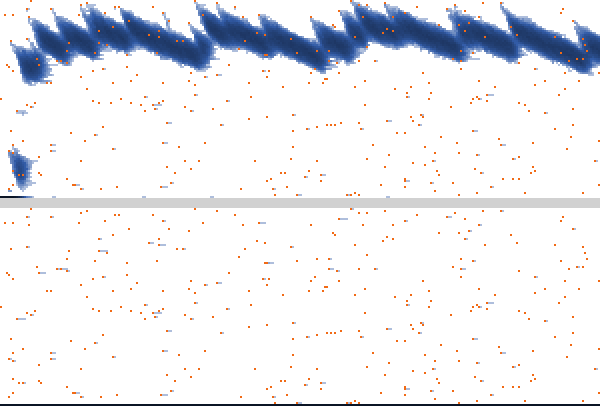

Two ways to revise a strategy in undercutting games
An undercutting game is a symmetric two-player game with ordered strategies 1, …, n + 1; in
SBRUG, n is set by horizon. Lower strategies are called earlier, and higher strategies later.
One way to picture it: two players share an activity that can last n periods; strategy i ≤ n
stops it at period i, and strategy n + 1 never stops first. Continuing together pays, but each
player can gain by stopping first.
SBRUG compares two ways of learning in two such games.
The traveler's dilemma
Two travelers submit claims. If they agree, both receive that amount. If their claims differ, both receive the lower claim, plus a reward for the lower claimant and an equal penalty for the higher claimant.
With the default claims of 2–100 and reward of 2, two claims of 100 earn each traveler 100. Yet claiming 99 against 100 earns 101. Against 99, the best choice is 98. The same reasoning leads all the way down to 2.
The repeated prisoner's dilemma
Two players repeatedly choose whether to cooperate or defect. Mutual cooperation benefits both, but each can gain by defecting while the other cooperates.
A strategy specifies when to start defecting. For example, strategy 10 cooperates for nine rounds, then defects. If the opponent defects earlier, the player responds by defecting from the next round. Strategy 1 defects immediately; the last strategy never defects first.
In the traveler's dilemma, higher strategies mean higher claims; in the prisoner's dilemma, they mean cooperating longer. In both games, against a known choice above the minimum, the best reply is one step below it; against the minimum, it is the minimum. The equilibrium is for both players to choose the minimum, even though both would earn more by continuing together.
Learning from others
The simulation runs two populations, each with 1000 agents by default. At each revision opportunity, one agent is chosen at random. Unless it experiments, it chooses the strategy that would earn most against the opponents it considers:
- Sampling best response (Sampling BR). The agent observes a random sample of opponents and evaluates every candidate strategy against that same sample.
- Best response to exact information (Exact BR). The agent knows exactly how common each strategy is and evaluates every candidate against the whole population.
Occasionally, an agent experiments instead, choosing a strategy at random. The two populations start identically and share the same revisers and experiments. Only the information used to choose best replies differs.
Time is measured in ticks: one tick contains as many revision opportunities as there are agents, so each agent revises once per tick on average.
Following an experiment
Start with 1000 travelers all claiming 2. Claims can range from 2 to 100, and the reward for undercutting is 2. Experiments occur in about one out of every 1000 revisions. Can these occasional random choices lift claims away from the minimum?
In the upper panel (Sampling BR), each traveler observes two travelers drawn at random before choosing a best reply. In the lower panel (Exact BR), each knows how common every claim is. Both populations receive the same experiments.
Read from left to right as time passes. Higher positions mean higher claims. Darker blue means more travelers using that claim; orange marks experiments choosing claims above 2.
The curve in the figure summarizes cooperation, labeled C/n in the simulator. It averages the lower claim over random pairs: 0 means the minimum of 2, and 1 means the maximum of 100.
How a high claim can spread
Suppose one traveler claims 100 while the other 999 claim 2. Exact BR still chooses 2. But a Sampling BR agent who observes claims 2 and 100 chooses 99. The high claimant counts as half the sample, even though it is only one traveler in a thousand.
Others can then observe that new claim of 99 and choose high claims too. Each reply can influence further replies. Undercutting pulls claims downward, while new experiments can lift them again.
This is one example run. Repeat the simulation to see which patterns recur.

Run the model
Try the illustrated setting yourself: load the model, press setup, then go. Click go again to pause, or use go once for a single tick. See below for the controls and things to try.
The two populations will appear here.
Start with the traveler's dilemma and watch for high claims spreading through sampled replies.
Use Original size (100%) for larger controls or Expand model for full screen. On a small screen, you can also open the model separately. Download the desktop version to run it in NetLogo.
Using the controls
Choose your settings and press setup to start a new run. Use go to run or pause, and go once to advance one tick. The last column below tells you whether a change needs a new setup.
| Control | Default | What it changes | Takes effect |
|---|---|---|---|
game | Traveler's dilemma | Which game the two populations play. | Next setup |
horizon | 98 | Number of rounds in the prisoner's dilemma. In the traveler's dilemma, the maximum claim is horizon + 2, so 98 gives claims from 2 to 100. | Next setup |
reward | 2 | The bonus paid to the lower claimant, taken from the higher claimant. | Next setup |
payoff-T, payoff-R, payoff-P, payoff-S | 6, 5, 1, 0 | Prisoner's-dilemma payoffs for defecting alone, both cooperating, both defecting, and cooperating alone, respectively. Keep them in strictly descending order. | Next setup |
n-of-agents | 1000 | Number of agents in each population. | Next setup |
initial-state | Everyone at strategy 1 | Start everyone at the earliest strategy, everyone at the latest, or spread them randomly across strategies. Both populations start the same way. | Next setup |
final-time | 300 | How many ticks the run lasts, up to 5000. | Next setup |
sample-size | 2 | How many observations a Sampling BR agent uses to choose a reply. | During a run |
log10-prob-exp | −3 | How often agents experiment. Higher values mean more experiments; −3 means about one in every 1000 revisions. | During a run |
mean-from | 100 | Where to start averaging cooperation. Increase it to leave out the beginning of a run. | Immediately |
Moving log10-prob-exp from −3 to −2 makes experiments ten times more frequent. The prob-exp monitor shows the resulting probability.
You can change sample size and experimentation during a run to see how the population responds. Use a fresh setup when comparing runs at fixed settings.
Reading the results
Strategy histories
The upper panel shows Sampling BR; the lower shows Exact BR. Time moves to the right, and higher strategies are higher up. Look for blue bands spreading, drifting downward, or being lifted by new experiments.
In the traveler's dilemma, the simulator numbers strategies from 1: strategy 1 is a claim of 2, strategy 2 is a claim of 3, and so on.
Darker blue means more agents; white means none. Orange marks an experiment with a strategy above 1. It records the experimental choice, even if that strategy disappears soon afterwards. The same orange marks appear in both populations.
In long runs, each column covers several ticks but shows only the last of them, including its orange marks. The cooperation curve and mean monitors still use every tick.
Cooperation, C/n
The curve averages over random pairs drawn from each population:
- Traveler's dilemma: it measures how high the lower of the two claims is, on a scale from the minimum claim to the maximum.
- Repeated prisoner's dilemma: it measures the fraction of rounds in which both players cooperate.
A value of 0 means minimum claims or immediate defection; 1 means maximum claims or cooperation throughout. High values require both members of a typical pair to use late strategies.
Average cooperation
The mean monitors average cooperation from mean-from to the present. For example, at time 300 with mean-from 100, they summarize ticks 100–300. Change the starting point to focus on the later part of a run. A dash means there are no results in the chosen window yet.
Things to try
Start with the traveler's dilemma and the settings used in the illustration. Press setup and go. Each run is different, so repeat settings to see which patterns recur.
1. Follow a rare experiment
Can an experiment leave a trace after the original experimenter has changed strategy? Find an orange mark at a high claim in the upper panel, then look to its right for claims slightly below it. Someone who observes the experiment may choose a high claim too, and that reply can influence others in turn. Look for bands that spread, drift down through undercutting, or are lifted by new experiments. Compare the lower panel.
2. Compare one observation with two
Make fresh runs with sample-size 1 and then 2. Does cooperation persist in the same way? With one observation, the reply is one strategy below the observed one, stopping at 1. With two, a rare high claim has two chances to enter the sample and can keep the reply high. Compare the bands and mean cooperation.
3. Change the frequency of experimentation
Set final-time to 1000 and mean-from to 500. Compare log10-prob-exp −4, −3 and −2: one experiment per 10,000, 1000 and 100 revisions on average. Are experiments frequent enough to replenish high claims before undercutting wears them away? How does Exact BR respond?
Finally, try log10-prob-exp 0: everyone experiments, so the two populations evolve identically. Press setup before each new run.
Downloads and citation
SBRUG is free software. You can run, inspect and modify the model under the GNU General Public License, version 3 or later.
Model citation
Luis R. Izquierdo and Segismundo S. Izquierdo (2026). SBRUG: Sampling Best Response in Undercutting Games. NetLogo model. https://luis-r-izquierdo.github.io/sbrug/
Related paper
Luis R. Izquierdo and Segismundo S. Izquierdo. How Sampling and Experimentation Sustain Cooperation in Undercutting Games.